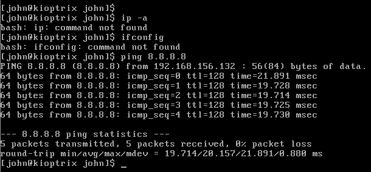
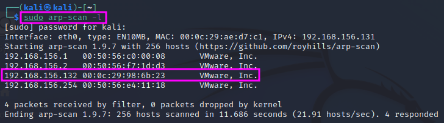
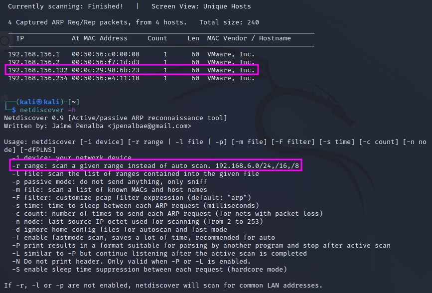
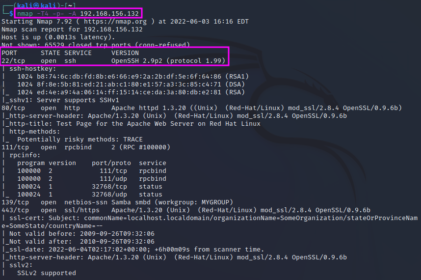
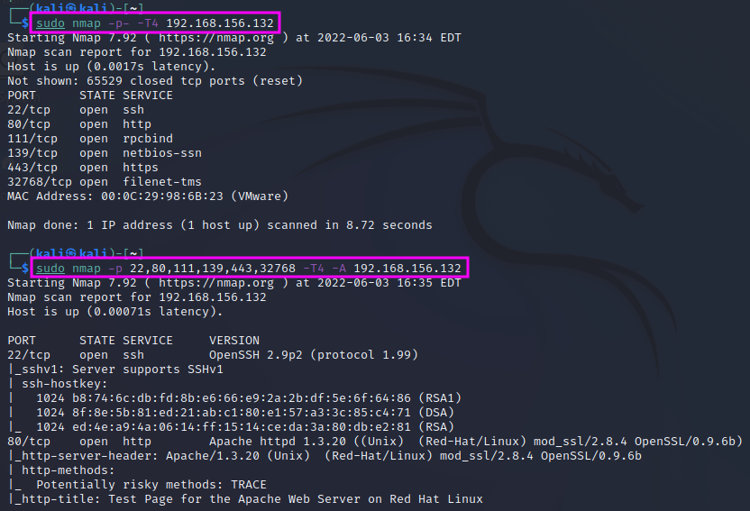

Scanning with Nmap
In this section, we will learn how to use Nmap to scan a target machine for open ports and services running on the machine that can be exploited in the following step.
The Kioptrix machine is already quite old, therefore ip and ifconfig are not available on that machine. However, to get to know the IP address of the Kioptrix machine, we can simply use the ping command, e.g. ping 8.8.8. (or any other IP address, does not matter), and we will see the IP of the Kioptrix machine.
We can see that in the setup shown above, the IP address was 192.168.156.132.
We can also use a tool installed on Kali Linux named arp-scan. With the command switch -l or -localnet, the target IP address range is generated from our local network interface configuration (network IP address and network mask). arp-scan has to be executed as sudo. We need to look for IP addresses that relate to VMWare, Inc..
In the 2019 version of the video, TCM used a tool called netdiscover. This tool is also installed under Kali Linux and works just as well as arp-scan. Again, one has to start it with sudo, e.g. sudo netdiscover -r 192.168.156.0/24 where the -r switch defines the scan range in CIDR notation.
The Nmap tool uses an interrupted 3-way handshake to scan for open ports and services. Instead of the ususal SYN`, ``SYN/ACK (in case the SYN has been sent to an open port before), ACK process, it resets the request t o establish a network connection sending an RST packet in return to the SYN/ACK message. This resets the request. Thereby we can identify that the port is open, even though we do not actually establish a connection.
There used to be a “stealth” mode for Nmap that could be invoked with nmap -sS, but this mode is not stealthy any more today. Modern intrusion detection systems (IDS) will detect the scan safely, but TCM reports that less than 80% of the scans get detected, because not every administrator uses an IDS.
We will use the nmap command with the following switches: nmap -T4 -p- -A <IP address>. The -T4 parameter determines the scan speed, running from 1 (slow) to 5 (fast). The slower the scan, the lower the chances of being detected. The switch -p- means that all ports (1-65535) shall be scanned. Without the p``switch ``nmap will just scan the top 1000 ports, which are the most commonly used ones, but we could miss a service. One can also scan specific ports, e.g. with nmap -T4 -p 80,443,53 -A. The -A parameter means that nmap will tell us all available information, including, e.g. version information, operating system, etc.
The most important parameters that we need to know are -sS for stealth mode and -sU for a UDP scan (default is TCP). These will cover 99% of our use cases, according to TCM. UDP also covers 65535 ports. Since UDP is a connectionless protocol, the response times can be much longer than for TCP, and therefore an entire scan can take very long time. TCM therefore recommends to just scan the top 1000 ports: nmap -sU -T4 -p <IP address>.
It is usually much faster to run a scan with -p- first and leave the -A switch, which tells nmap to deliver the maximum available information, out. Once we have seen which ports are open in the first scan (without -A), we can do a second scan with the -A switch but limit the scan only to the ports that were found open. This procedure can also be automated with a script. However, this is not really necessary since an nmap scan is among the first things that one does in a pentest, and while the scan runs one can just as well spend the time on OSINT exercises, such as looking for breached credentials or scanning for information on social media.
